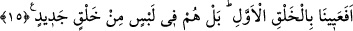

bilmezler. Tam aksine kendilerinin her türlü tehlikelerden kurtulacaklarını zannederler.
Allah Teâlâ’dan bizi mü’minlerden kılmasını, yakîn ehlinin yolunda sâbit-kadem
eylemesini, onların feyiz ve bereketlerinden bizlere de ikrâm etmesini ve bizleri onları
takip etmekle şereflendirmesini niyaz ederiz.
15. İlk yaratmada âcizlik mi gösterdik? Hayır, onlar yeni bir yaratma husûsunda
şüphe içindedirler.
“İlk yaratmada âcizlik mi gösterdik ki (yeniden yaratamayalım)?”
Şu âyette de bu kelime zikredilmişti. “Onları yaratmaktan âciz kalmadı.” (Ahkâf,
46/33)
Sanki şöyle denilmiş olmaktadır: İlk olarak yaratmaya giriştik de ondan âciz mi kaldık
ki, bunun sadece bir iâdesinden ibâret olan ikinci yaratıştan âciz kalacağımız
zannedilebilsin? Diğer bir ifadeyle acaba biz mahlûkatın ilk yaratılışında âciz kalmış ve
zorluk mu çekmişiz ki ikinci yaratılış konusunda geride kalalım.”
Aynü’l-maânî’de âyetteki ilk yaratmadan Âdem (a.s.)’ın yaratılmasının kasdedildiği
söylenir ki bunu mü’min kâfir bütün insanlar kabûl ederler.
et-Tevilâtü’n-Necmiyye’de âyetin mânâsının şu şekilde olduğu zikredilir: Herhangi
bir şeyi yapmaktan âciz kaldık mı ki insanları yeniden diriltmekten âciz kalalım veya bu
bize zor gelsin? Hayır, asla böyle değildir.
Âyet-i kerimedeki “halk-ı cedîd” ifadesiyle âhiretteki yeniden yaratılışa işâret
edilmektedir. Yeniden yaratışın zaman bakımından çok yakın olduğunu göstermek üzere
bu iş için, kök anlamı bir elbisenin kesilip dikilmesini ifade eden cedid kelimesi
kullanılmıştır.
“Bel” ile başlayan bu cümle, kendisinden önceki mukadder bir cümleye atıftır. Sanki
şöyle denilmiş olmaktadır: Onlar ilk yaratmaya gücümüzün yettiğini inkâr etmiyorlar.
Aksine onlar alışageldikleri olağan durumun aksine bir hâdise olduğu için yeniden
yaratma konusunda şüphe ve karışıklık içerisindeler. Zira bu dünyâda onlara göre böyle
durumlar gerçekleşmemektedir. İşte bu yapmış oldukları âşikâr fâsid bir kıyastır.
Kâşifî şöyle der: Mekke müşrikleri Hak Teâlâ’nın başlangıçta mahlûkatın yaratıcısı
olduğunu itiraf etmişlerdi. Sonra buyurdu ki; bir kimse ki her şeyi madde ve yardım
olmaksızın yaratmaya kàdir ise daha sonra onların maddelerini bir araya getirip hayatını
iade etmeye gücü neden yetmesin? Şüphesiz ki biz mü’minlerde bunu idrâk etme kuvveti
vardır, fakat kâfirler şek ve şüphe içindedirler. Bunun sebebi yeniden yaratılma
konusunda şeytanın vesvese vermesidir. Yani yeniden yaratılışı ve haşri mümkün
görmezler.
“Halk” kelimesinin nekre olarak gelmesi, bu işin şânını yüceltmek, onun bilinen